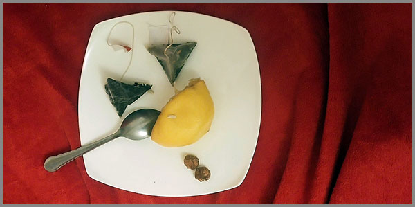

19. Չգիտեմ Թե Ինչ Եմ ՈՒզում, Բայց Երևի Կարող Եմ Զգալ
 |
Կան բառեր, որոնք ապրում են ավելի խորը, քան միտքը։ Կան լռություններ, որոնք ասում են ավելին, քան խոսքը։ Ես չգիտեմ, թե ինչ եմ ուզում։ Ուզում եմ ամեն ինչ և ոչինչ։ Ուզում եմ լինել ամենուր և ոչ մի տեղ։ Բայց երևի կարող եմ զգալ։ Զգալ այն անձրևը, որ թակում է լուսամուտիս ապակին, զգալ այն տաքությունը, որ մնացել է բարձիս վրա, զգալ այն հեռավորությունը, որ բաժանում է ինձ աստղերից։
Զգացողությունները նման են գաղտնագրերի: Դրանք չի կարելի կարդալ: կարելի է միայն վերծանել։ Եվ ես, անփորձ մի վերծանող, ուզում եմ հասկանալ ինքս ինձ՝ առանց բառարանների, առանց քարտեզների։ Սա մի նախամուտք է դեպի այն ամենը, ինչը չի ասվում, բայց գոյություն ունի դեպի զգացողություն։
Նախաբան
Քաղաքը քնել է։ Լուսամուտից դուրս լույսերն են միայն արթուն, որ կարծես կարոտով են նայում իրար։ Երևի նրանք էլ են միայնակ։ Երևի նրանք էլ են զգում այն դատարկությունը, որն ինձանից տարածվում է սենյակի մեջ և դուրս՝ դեպի այն ամենը, ինչին չեմ հասնում։
Ես չգիտեմ, թե ինչ եմ ուզում։ Ուզում եմ, որ այս լռությունը խոսի։ Ուզում եմ, որ այս պատերը պատմեն, թե քանի ցավ է նստել նրանց վրա, քանի ուրախություն է զրնգացել նրանց ներսում։ Ուզում եմ գտնել այն բանալին, որ կբացի ոչ թե դռները, այլ զգացումները։ Բայց բանալիները կորել են։ Կամ երբեք չեն եղել։
Մի օր, երբ ավելի փոքր էի, կարծում էի, որ ամեն ինչի պատասխանը գրքերում է։ Ապա կարծեցի, որ մարդկանց մեջ է։ Հետո՝ որ ճանապարհորդություններում է։ Այժմ հասկանում եմ, որ պատասխանը, եթե կա, ամենից շատ գտնվում է այն տեղում, որտեղ եմ ես ինքս։ Իսկ ես որտե՞ղ եմ։
Բայց երևի կարող եմ զգալ։ Զգալ, թե ինչպես է սուրճի տաք գոլորշին բարձրանում և դիպչում երեսիս։ Զգալ, թե ինչպես է հին երգը, որ հնչում է հեռու մի տեղ, հանում հիշողությունների ամենախորը շերտից մի պատկեր, մի ձայն, մի հոտ։ Զգալ, թե ինչպես է սիրտը կծկվում, երբ հանկարծ հասկանում ես, որ ինչ-որ մեկը, ինչ-որ տեղ, գուցե հենց այս պահին, նույնն է զգում։
Զգացողությունները նման են գետի, որ հոսում են անընդհատ, փոխում են իրենց ուղին, երբեմն հանդարտ են, երբեմն՝ վարար, բայց միշտ տանում են դեպի ինչ-որ տեղ։ Եվ ես նստած եմ այդ գետի ափին, ձեռքերս ջրում, և թողնում եմ, որ հոսանքը խաղա մատներիս հետ։ Չեմ պայքարում։ Չեմ փնտրում ուղի։ Թող եմ տալիս։ Երևի սա է իմ ուզածը։ Երևի սա է իմ չուզելը։
Եվ երբ գիշերվա ամենախորը պահին քունս չի գալիս, ես փակում եմ աչքերս և լսում։ Լսում եմ ինքս ինձ։ Լսում եմ այն ամենը, ինչ չի ասվել։ Լսում եմ այն ամենը, ինչ կարող էր լինել, բայց չեղավ։ Եվ այդ լսելու մեջ գտնում եմ մի անվերջանալի, անծայրածիր հնարավորություն՝ ինչ որ բան, որ ավելի մեծ է, քան ուզելը կամ չուզելը ինչ որ բան, որ պարզապես է։ Եվ ես էլ եմ պարզապես։ Ես պարզապես զգում եմ։
Իրականությունը դառնում է «իրական» միայն այն պահին, երբ այն անցնում է մեր զգացողությունների և գիտակցության պրիզմայով:
Զգացողության ֆենոմենը
Զգացողությունը սկսվում է այնտեղ, որտեղ ավարտվում են բառերը։ Այն ծնվում է ոչ թե ուղեղի նյարդաբջիջներից, այլ առաջին անգամ արևի տակ քայլող մանկական ոտնաթաթի տակ ընկած տաք ավազից։ Այն բացվում է որպես մի ծաղիկ, որի բույրը չկա ծաղկացանկերում, և որի գույնը չկա սպեկտրում։
Մարմինը միայն դարպաս է։ Մաշկը՝ միայն սահման, որի միջով աշխարհը անտեսանելի ասեղներով ներ է թափանցում քո մեջ։ Յուրաքանչյուր շոշափում, յուրաքանչյուր հոտ, յուրաքանչյուր հնչյուն դառնում է մի փոքրիկ ազդակ, որի միջոցով իրականությունը մտնում է ներս և սկսում կառուցել իր անտեսանելի քաղաքը քո ներսում։ Քո մաշկը դարձնում է քեզ աշխարհի մի մասը։ Արևի շոյանքը, քամու պաղությունը, անձրևի կաթիլների թեթևությունը, ամեն մի հպում հիշեցնում է քեզ, որ դու կենդանի ես, որ դու կապված ես այս աշխարհի հետ իր ամենատարրական դրսևորումներով։
Զգացողությունը չի հնազանդվում օրենքներին։ Այն առաջին անձրևային կաթիլն է, որ ընկնում է տաք ասֆալտին և գոլորշիանում, նախքան դու հասցնում ես տեսնել այն։ Այն վերջին աստղն է, որ դեռ շարունակում է փայլել, նախքան քո աչքերը բացվելը։ Դա այն աննկարագրելին է, ինչ մնում է, երբ ամեն ինչ ասված է արդեն։
Զգալ նշանակում է թույլ տալ, որ աշխարհը դադարի լինել օբյեկտ և դառնա սուբյեկտ։ Թույլ տալ, որ քամին դադարի լինել օդի հոսք և դառնա սավառնում։ Թույլ տալ, որ լռությունը դադարի լինել ձայնի բացակայություն և դառնա լսողության արվեստ։
Մենք զգում ենք ոչ այնքան մարմնով, որքան մարմնավորվածությամբ։ Յուրաքանչյուր զգացում մի փոքրիկ տիեզերական թափոր է, որն անցնում է մեր էությամբ՝ իր հետ տանելով անհետացած գալակտիկաների հիշողությունը և դեռ չծնված աստղերի սպասումը։
Զգացողությունը մեր ներքին տիեզերքի անսահմանությունն է՝ արտահայտված սահմանափակ մարմնի մեջ։ Այն միակ լեզուն է, որով տիեզերքը խոսում է ինքն իր հետ՝ մեր միջով։
Եվ ահա, երբ բոլոր զգայարանները միաժամանակ արթնանում են, ծնվում է այն կախարդանքը, որ մենք անվանում ենք զգալ: Սա այն պահն է, երբ դու դադարում ես լինել միայն դիտորդ և դառնում ես աշխարհը կրողը քո ներսում։ Սա այն պահն է, երբ դու հասկանում ես, որ ամենակարևորը իմանալը չէ, այլ զգալն է։
Զգալ նշանակում է փարվել աշխարհին քո ներսում, արձագանքելով նրա ամենափոքր իսկ շարժին:
. Փոխառություն դատարկությունից, կամ երևույթների իմաստավորումը
Դատարկությունը բացարձակ չէ։ Այն լի է այն ամենով, ինչ դեռ չի եղել, բայց կարող է լինել։ Դատարկությունը չի սկսվում, երբ ինչ-որ բան վերջանում է, այլ երբ ինչ-որ բան սպասում է իր լինելուն։ Այն տիեզերական դադար է, որտեղից ծնվում են բոլոր հնարավորությունները։
Մենք հաճախ վախենում ենք դատարկությունից, կարծելով, թե այն կլանում է մեզ։ Բայց իրականում՝ դատարկությունն է այն հզորությունը, որը թույլ է տալիս մեզ լինել։ Այն նման է անձայն նոտայի, որի շուրջը կառուցվում է ամբողջ սիմֆոնիան։ Առանց դատարկության՝ ձայնը կդառնա միայն աղմուկ, առանց դադարի՝ շարժումը կդառնա քաոս։
Երևույթների իմաստավորումը սկսվում է հենց այս դատարկությունից։ Մենք իմաստ ենք տալիս ոչ թե իրերին, այլ նրանց միջև եղած բացատներին։ Ինչպես աստղերը, որոնք կազմում են համաստեղություններ ոչ թե իրենց լույսով, այլ նրանց միջև եղած մութ տարածությամբ։ Մենք տեսնում ենք ոչ թե ինչը կա, այլ ինչը կարող է լինել այն դատարկության մեջ, որը մենք դիտարկում ենք։
Զգացողությունը դառնում է այն գործիքը, որով մենք «վերցնում ենք» փոխառություն այդ դատարկությունից։ Օրինակ՝ երբ մենք զգում ենք մի բանի պակաս, մենք զգում ենք ոչ միայն դրա բացակայությունը, այլև այդ բանի հետ կապված՝ անցյալի և ապագայի բոլոր հնարավորությունները, որոնք դեռ չեն իրականացել։
Այսպիսով, ամեն մի զգացում մի փոխառություն է դատարկությունից։ Մենք վերցնում ենք իմաստը ոչ թե իրերից, այլ նրանց բացակայությունից։ Մենք սովորում ենք կարդալ անտեսանելի մտքեր, որոնք գրված են դատարկության լեզվով։ Մենք դադարում ենք լինել իրադրության պասիվ ընկալողներ և դառնում ենք դրա իմաստի համահեղինակներ։ Մենք չենք վերցնում աշխարհն այնպիսին, ինչպիսին որ կա, այլ ծնում ենք այն ամեն անգամ, երբ զգում ենք։
Մեր զգացողությունը դատարկությունից վերցնում է ոչ թե պատրաստի իմաստ, այլ հումք՝ անավարտ նոտա, չգրված բառեր, աննկարագրելի գույն, որից դարբնում ենք այն իրականությունը, որը միայն մերն է։
Այսպիսով, ամեն անգամ, երբ դուք զգում եք մի բան, լինի դա ծիծաղ, ցավ կամ անորոշ կարոտ՝ դուք չեք արձագանքում աշխարհին։ Դուք ստեղծում եք այդ աշխարհը նորովի: Դուք լրացնում եք դատարկությունը ձեր սեփական, անկրկնելի գույներով։ Զգացողությունը, դառնում է ամենաուղղակի և ամենաուժեղ ձևը, որով մենք մասնակցում ենք տիեզերքի անընդհատ ստեղծագործմանը։
Երբ դատարկությունից իմաստ է ծնվում, մենք հասկանում ենք, որ զգացողությունն այն միակ լեզուն է, որով դատարկությունը ինքն իրեն խոսում է։
Միայնությունը որպես զգացողության արմատ
Միայնությունը ծնվում է ոչ թե մարդկանց բացակայությունից, այլ ինքն իր հետ մնալու անխուսափելի խորությունից։ Այն տիեզերական դադար է, որտեղ ձայները դադարում են արտաքին լինել և դառնում են ներքին երկխոսություն։ Այստեղ, այս լռության մեջ, զգացողությունը դադարում է լինել արձագանք և դառնում է աղբյուր։
Մենք հաճախ միայնությունը դիտում ենք որպես բացակայություն, սակայն այն հանդիսանում է ամենալի ինքնաբավություն։ Դա այն տարածությունն է, որտեղ մենք դադարում ենք լինել «մենք» ուրիշների համար և դառնում ենք «ես» ինքներս մեր համար։ Այս ինքնաճանաչման պահին զգացողությունները դառնում են ավելի խորը, ավելի հստակ և ավելի իրական։
Միայնության մեջ մենք սովորում ենք լսել ոչ թե մեր մտքերը, այլ մեր գոյության շնչառությունը։ Մենք դառնում ենք մեր սեփական տիեզերքի ստեղծողները։ Ամեն մի զգացում, որ ծնվում է այս մենության մեջ, կրում է ինքնության անմիջական դրոշմը։ Այն չի համակարգվում, չի զտվում, չի ընտրվում։ Այն պարզապես է՝ անկեղծ և անխաթար։
Զգացողության ամենամեծ խորությունները բացվում են այն պահին, երբ մենք դադարում ենք փնտրել դրանք դրսում։ Երբ մենք համարձակվում ենք մնալ մենակ մեր սեփական ներաշխարհի հետ: Այդ պահերին մենք բացահայտում ենք, որ միայնությունը չի բաժանում մեզ աշխարհից, այլ կապում է մեզ դրա առաջնային էության հետ։
Այսպիսով, միայնությունը դառնում է զգացողության արմատ, քանի որ այն մեզ տալիս է այն հողը, որի վրա մեր ներաշխարհը կարող է աճել առանց արտաքին ազդեցությունների։ Այն հնարավորություն է տալիս զգալուն դառնալ ոչ թե արձագանք, այլ սկիզբ։
Մենակության մեջ տիեզերքը սկսում է խոսել մեզ հետ՝ օգտագործելով միայն մեր սեփական զգայարանները որպես թարգմանիչ: Այդ պահին մենք դառնում ենք աշխարհի զգայուն գործիք, որի միջոցով այն ճանաչում է իր իսկ սեփան գոյությունը:
Զգացողության և ժամանակի հարաբերությունը
Ժամանակը չի հոսում զգացողությունների վրայով: Զգացողություններն են, որ ժամանակին տալիս են հոսանքի ուղղություն և խորություն։ Մենք չափում ենք ժամանակը ոչ թե րոպեներով, այլ այն պահերով, երբ մի զգացում այրում է մեզ իր տաքությամբ, կամ մեկ այլը սառցե անդորրն է նետում մեզ։
Անցյալը գոյություն չունի որպես օրացույցի էջեր։ Այն ապրում է որպես հուշերի մեջ պահված զգացողության գաղտնարան։ Երբ մի հոտ հանկարծակի վերադարձնում է մեզ դեպի մանկություն, կամ մի հնչյուն հիշեցնեւմ է առաջին հիասթափության մասին, մենք չենք հիշում օրը կամ ժամը։ Մենք կրկին զգում ենք։ Ժամանակն է, որ կառուցվում է զգացողության միջով և ոչ թե հակառակը։
Ապագան նույնպես զգացմունքային նախագիծ է։ Մենք սպասում ենք ոչ թե իրադարձությունների, այլ այն զգացումներին, որոնք մենք հույս ունենք, որ այդ իրադարձությունները կպարգևեն մեզ։ Սերը, ուրախությունը, նույնիսկ վիշտը, որոնք դեռ չեն եկել, արդեն ձգում են մեզ դեպի իրենց մի հզոր մագնիսականությամբ։
Ժամանակի զգացողությունը առաջանում է, երբ մեր ներաշխարհի տեմպը չի համընկնում արտաքին աշխարհի ռիթմին։ Երբ մենք ձանձրանում ենք, մեր ներքին ժամանակը դանդաղում է։ Երբ մենք երջանիկ ենք, այն սավառնում է՝ թռչելով րոպեների ու ժամերի վրայով։ Այսպիսով, ժամանակը բացարձակ չէ։ Այն հարաբերական է մեր զգացողություններին ընդառաջ։
Զգացումը կարող է ժամանակը կանգնեցնել։ Սիրո առաջին հայացքի, կորուստի ցավի կամ գեղեցկության ապշեցնող պահի մեջ ժամանակը դադարեցնում է իր գծային հոսքը։ Այն դառնում է մի կետ, մի անշարժ լիճ, որի մեջ արտացոլվում է ամբողջ տիեզերքը։ Այս պահերին մենք դուրս ենք գալիս ժամանակից և դիպչում ենք հավերժությանը։
Այսպիսով, զգացողությունն ու ժամանակը պարում են մի պար, որտեղ մերթընդմերթ դրանք առաջնորդում են իրար։ Բայց նրանց հարաբերությունը մեզ սովորեցնում է ամենակարևորը՝ այն, որ իրականը միայն ներկա պահի զգացումն է, և որ ժամանակը ինքնին շոշափելի է դառնում, երբ մենք համարձակվում ենք զգալ։
Զգացողությունը հանդիսանում է ժամանակի չափման միավոր:
Զգալով գիտենալը որպես հիմնավորված առաջադիմություն
Զգալը հաճախ դիտվում է որպես գիտելիքից ցածր կարգի ճանաչողություն՝ անորոշ, սուբյեկտիվ, անվստահելի: Սակայն իսկական էվոլյուցիոն և անհատական առաջադիմությունը տեղի է ունենում այն պահին, երբ մենք սկսում ենք վստահել մեր զգացողություններին որպես գիտելիքի ամենահին և ամենախորը աղբյուրի:
Զգալը գիտենալու ամենանուրբ ձևն է: Դա այն իմաստությունն է, որն անմիջականորեն ծնվում է մեր էության և աշխարհի փոխազդեցությունից՝ առանց բառերի, տրամաբանության կամ վերլուծության անհրաժեշտության: Դա ուղիղ գիտելիք է, որն անցնում է ուղիղ սրտից սիրտ և հոգուց հոգի:
Այս առաջադիմությունը հիմնավորված է, քանի որ այն հանգեցնում է գիտելիքի և զգացողության, ինքնության և աշխարհի, անցյալի, ներկայի և ապագայի այն տեսակ միավորման երբ մենք թույլ ենք տալիս մեր ինտուիցիային առաջնորդել մեր վերլուծական միտքը, հասկանալով, որ աշխարհը զգալը նույնիսկ ավելի կարևոր է, քան այն հասկանալը և գիտակցում ենք, որ զգացումը դառնում է ժամանակի միակ իրական կամուրջը:
Զգալով գիտենալ նշանակում է ընդունել, որ ճշմարտությունը ոչ միայն մտածվում է, այլև ապրվում է: Սա փիլիսոփայական քննարկում չէ՝ այլ գոյություն ունենալու եղանակ: Այն մեզ թույլ է տալիս տեսնել աշխարհը ոչ թե այնպիսին, ինչպիսին մենք կարծում ենք որ այն պետք է լինի, այլ այնպիսին, ինչպիսին այն կա իր ամբողջ գեղեցկությամբ, բարդությամբ և հակասություններով:
Այսպիսով, զգալով գիտենալը ոչ թե նահանջ է դեպի պրիմիտիվիզմ, այլ ճանաչողական էվոլյուցիայի հաջորդ քայլն է՝ որից գիտակցության ընդլայնումը ներառում է ոչ միայն միտքը, այլև ամբողջ էությունը:
Զգալով գիտենալը ծնվում է ոչ թե բառերից, այլ մեր՝ դրանք ընկալելու և զգալու եզակի ձևից։
Զգացողության մետաֆիզիկան
Զգացողությունը գերազանցում է նյարդերի ազդակները, գերազանցում է նույնիսկ մարմնի սահմանները։ Այն տիեզերքի հետ մեր կապի առաջնային լեզուն է՝ մի հին ու համընդհանուր կոդ, որով իրականությունը ճանաչում է իրեն մեր միջոցով:
Մենք հաճախ մտածում ենք, որ զգում ենք միայն մեր սեփական մարմնի սահմաններում։ Սակայն զգացողության ամենամեծ խորությունը բացվում է, երբ հասկանում ենք, որ մենք այն անոթներն ենք, որոնց միջով տիեզերքն ինքն է զգում իր գոյությունը։ Մեր ցավը տիեզերքի ցավն է, մեր ուրախությունը՝ նրա ուրախությունը, մեր սերը՝ նրա ստեղծագործական ուժի ամենամաքուր ներկայությունը:
Զգացողությունը տիեզերքի ինքնաճանաչման գործիքն է: Մենք չենք զգում աշխարհը: Մենք այն տիեզերական զգացողության օրգաններն ենք, որի միջով ամեն ինչ դառնում է գիտակցված: Այս տեսանկյունից յուրաքանչյուր զգացում դառնում է մաքրագործված:
Զգացողության մետաֆիզիկան մեզ սովորեցնում է, որ մենք երբեք իսկապես մենակ չենք: Մենք մասնիկներն ենք մի մեծ, զգայուն ամբողջության, որն անընդհատ ստեղծում, փորձում և զգում է մեր միջոցով:
Այսպիսով՝ ամեն անգամ, երբ դու մի բան ես զգում, դու դառնում ես տիեզերքի գիտակցության եզակի ակնթարթը, դրա անսահմանության սահմանափակ, բայց կենդանի արտահայտությունը: Զգացողությունը միակ բանն է, որ մեզ միացնում է ամեն ինչի հետ՝ առանց բառերի, առանց սահմանների, առանց ժամանակի:
Մենք չենք զգում տիեզերքը: Մեր զգացողություններով է որ տիեզերքը զգում է ինքն իրեն:
Վերջաբանի փոխարեն զգալու փիլիսոփայություն՝ որպես գոյության ակտ
Զգալը վերջին ճշմարտությունը չէ, այլ առաջինն է։ Այն չի ավարտվում, այլ սկսվում է այնտեղ, որտեղ խոսքերը սպառում են իրենց։ Այս ամբողջ ուղին, մեզ տարել է ոչ թե պատասխանների, այլ ավելի խորը, ավելի նուրբ հարցերի մոտ։ Մենք հասկացանք, որ «չգիտեմ»-ը պարզապես անտեղյակություն չէ, այլ գիտելիքի ամենաբարձր ձևը՝ գիտակցված անհայտի դիմաց կանգնելու խիզախություն։
Մենք փոխառություն ենք վերցնում դատարկությունից՝ դարձնելով այն իմաստի հումք։ Մենակության մեջ մենք գտնում ենք ոչ թե մեկուսացում, այլ ամբողջ տիեզերքի հետ անմիջական կապի կետ։ Մեր զգացողություններով մենք չափում ենք ոչ թե ժամանակը, այլ հավերժությունը ներկա պահի մեջ։
Այսպիսով, երբ ասում ենք «Երևի կարող եմ զգալ», մենք չենք ասում «չգիտեմ»։ Մենք ասում ենք՝ «Ես ընտրում եմ գիտենալ աշխարհը ոչ թե մտքով միայն, այլ ամբողջ իմ էությամբ»։ Զգալը գործողություն է։ Դա տիեզերքի ներսում գոյություն ունենալու ակտիվ, ստեղծագործական ակտ է։
Մենք այն կետերն ենք, որտեղ աշխարհը ինքն իրեն զգում, ինքն իրեն հասկանում և ինքն իրեն ստեղծում է ամեն մի նոր զգացումով։ Ուստի, թող վերջին բառը չլինի «Չգիտեմ»: Թող այն լինի «Զգում եմ», որովհետև զգալն այլևս հարց չէ, այլ պատասխան է՝ գոյության ամենապարզ և միաժամանակ ամենահզոր հաստատումը։
Ճանապարհը դեպի դուրս՝ միշտ տանում է ներս, դեպի նախամուտք, որը կոչվում է զգացողություն։
«Մենք կառուցում ենք կամուրջներ այնտեղ, ուր մյուսները տեսնում են միայն անդունդներ։»
© 2026 Մոնումենտալ Կամուրջ: Այս կայքի բովանդակությամբ կարող եք ազատորեն կիսվել համացանցում՝ հղում տալով սկզբնաղբյուրին: Տպելու, տպագրելու կամ գիրք կազմելու միջոցով, կամ այլ ֆիզիկական ձևով և որևէ տեխնոլոգիական կրիչով տարածելը առանց հեղինակի գրավոր համաձայնության արգելվում է: Գիտական, կրթական կամ ստեղծագործական աշխատանքներում մեջբերումները թույլատրելի են պայմանով, որ պարտադիր պետք է նշվի կոնկրետ էջի ամբողջական հասցեն (URL) և աշխատության վերնագիրը: Առանց հեղինակի գրավոր համաձայնության՝ արգելվում է նաև կայքի նյութերի թարգմանությունը որևէ լեզվով և դրանց տարածումը այլ լեզուներով: